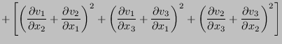

To calculate buckling loads routine arpackbu.c is called. The following steps are needed in a buckling calculation:
The buckling mode in ARPACK (Mode 4, cf [42]) is used to solve a system of the form
|  | (533) |
where is symmetric and positive definite and is symmetric but indefinite. The iterative procedure to find the eigenvalues requires routines to solve
and to calculate
Similar to the frequency calculations, the LU decomposition (SPOOLES) to solve Equation (534) is performed before the loop determining the buckling factor, since the left hand side of the equation does not vary. The matrix multiplication in Equation (535) is taken care of by routine op.f.
A major difference with the frequency calculations is that an additional
iteration loop is necessary to guarantee that the value of the buckling
factor is right. Indeed, experience has shown that the value of  matters
here and that the inequality
buckling factor
should be satisfied. If it is not, the whole procedure starting with the LU
decomposition is repeated with a new value of
buckling
factor. If necessary, up to four such iterations are allowed.
matters
here and that the inequality
buckling factor
should be satisfied. If it is not, the whole procedure starting with the LU
decomposition is repeated with a new value of
buckling
factor. If necessary, up to four such iterations are allowed.